Nhóm thực hiện
- Tên nhóm
- CO5085 · 2570357 · 2570083
- Thực hiện
- Đặng Nguyễn Tấn Tài · 2570357
Lương Minh Duy · 2570083 - Lớp
- CH01
Từ phân loại ảnh đến phát hiện đối tượng: code, kết quả thực nghiệm và báo cáo cho năm bài tập E1–E3, A1–A2.
Bài tập của nhóm Đặng Nguyễn Tấn Tài và Lương Minh Duy, lớp CH01.
Ba dataset độc lập; mỗi thí nghiệm sử dụng validation để chọn cấu hình/weights và chỉ đánh giá test sau lựa chọn.
10 lớp, ảnh xám 28 × 28. Cùng split phân tầng theo lớp, seed 42; không augmentation.
43 loại biển báo giao thông. Chia train/validation theo physical-sign track, giữ test nguồn.
20 lớp phát hiện đối tượng, dùng 11,540 ảnh trainval có nhãn; chia theo image ID, seed 42.
Mỗi notebook chứa toàn bộ pipeline và output đã lưu. Xem trên GitHub hoặc tải về để chạy bằng Jupyter.
Phân loại ảnh với training loop PyTorch tự viết và phân tích lỗi.
| Softmax | 84.11% |
|---|---|
| MLP | 89.45% |
| CNN-A | 91.66% |
| CNN-B | 91.45% |
Multi-Head Self-Attention tự hiện thực, bản PyTorch đối chiếu và nhiều cách token hóa.
| MSA thủ công CNN-stem · 4 heads | 90.50% |
|---|
8 cấu hình đối chiếu MSA thủ công/PyTorch, token theo hàng, patch, CNN-stem và số attention heads.
Mô hình hóa ảnh dưới dạng chuỗi và so sánh với baseline không hồi tiếp.
| LSTM rows | 89.70% |
|---|---|
| GRU rows | 90.06% |
| CNN-B baseline | 91.45% |
So sánh CNN và Transformer trên tập ảnh lớn, gồm from-scratch, pretrained và các chế độ freeze/fine-tune.
| Mô hình | Accuracy | Macro-F1 |
|---|---|---|
| ResNet-50 | 97.83% | 0.9678 |
| DeiT-Small | 98.92% | 0.9790 |
14 lượt train: scratch, head-only, partial/full fine-tuning, ảnh hưởng augmentation và lặp ba seed. Train/validation được chia theo track biển báo.
Cùng backbone ResNet-50 pretrained ImageNet: RetinaNet với FPN P3–P7 và Faster R-CNN với FPN P2–P6. Hai detection head được huấn luyện trên VOC2012.
| Mô hình | VOC mAP50 | AP50:95 |
|---|---|---|
| RetinaNet | 70.88% | 39.13% |
| Faster R-CNN | 73.16% | 40.98% |
Kaggle Tesla T4: FPS batch 1 25.08 / 22.68 (RetinaNet / Faster R-CNN). Notebook có AP/AR, precision, recall, F1, AP từng lớp, PR curves, ma trận, ảnh GT/dự đoán/lỗi và benchmark latency/FPS/VRAM.
Kiểm tra ảnh hưởng của phi tuyến và inductive bias không gian trên cùng Fashion-MNIST.
Softmax: Linear 784 → 10. MLP: 784 → 256 → 128 → 10. CNN-A: 2 Conv/Pool, head flatten → FC. CNN-B: 3 Conv/BatchNorm/Pool và global average pooling; số tham số head thấp hơn.
| Mô hình | Val acc. | Test acc. | Test F1 | Tham số |
|---|---|---|---|---|
| Softmax | 85.05% | 84.11% | 0.8401 | 7,850 |
| MLP | 89.47% | 89.45% | 0.8948 | 235,146 |
| CNN-A | 92.00% | 91.66% | 0.9169 | 421,642 |
| CNN-B | 91.93% | 91.45% | 0.9144 | 94,186 |
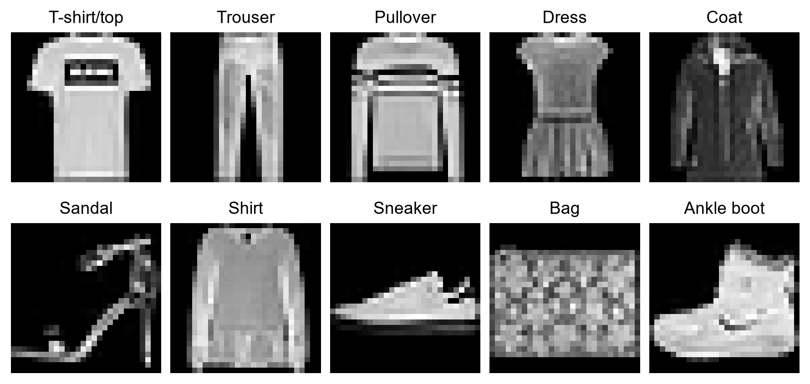
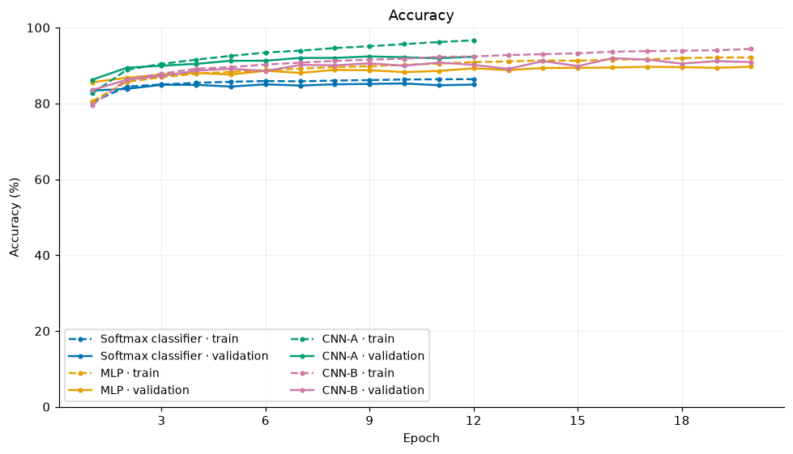
CNN-A đạt test accuracy cao nhất trong bốn cấu hình; CNN-B đạt 91.45% với ít tham số hơn khoảng 4.48 lần. Nhưng hai CNN khác cả độ sâu, BatchNorm và head, nên không thể quy chênh lệch chỉ cho số tham số.
Nhóm lớp áo (Shirt, T-shirt/top, Pullover, Coat) thường nhầm nhau. Đây là lỗi thống kê từ confusion matrix; ảnh minh họa không thể thay cho tần suất trên toàn test.
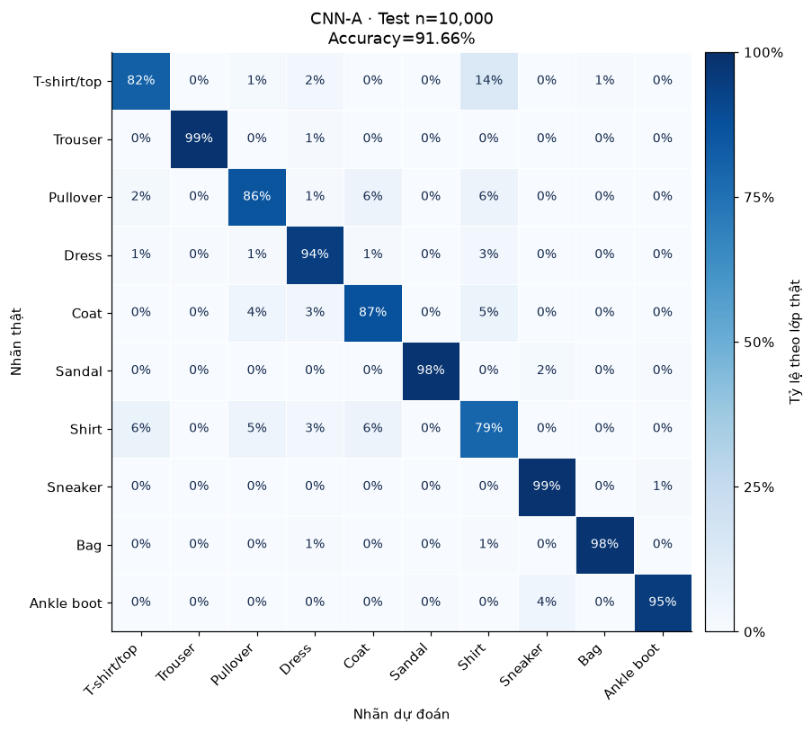
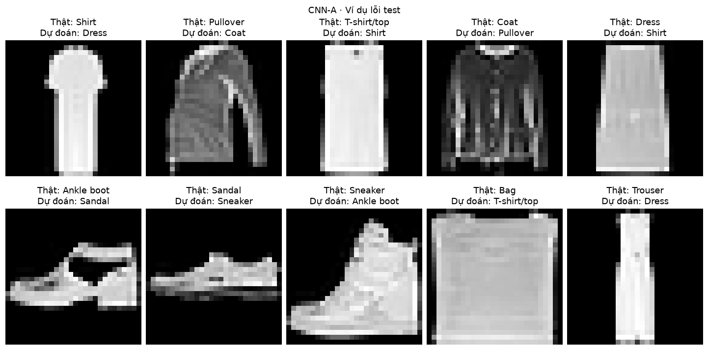
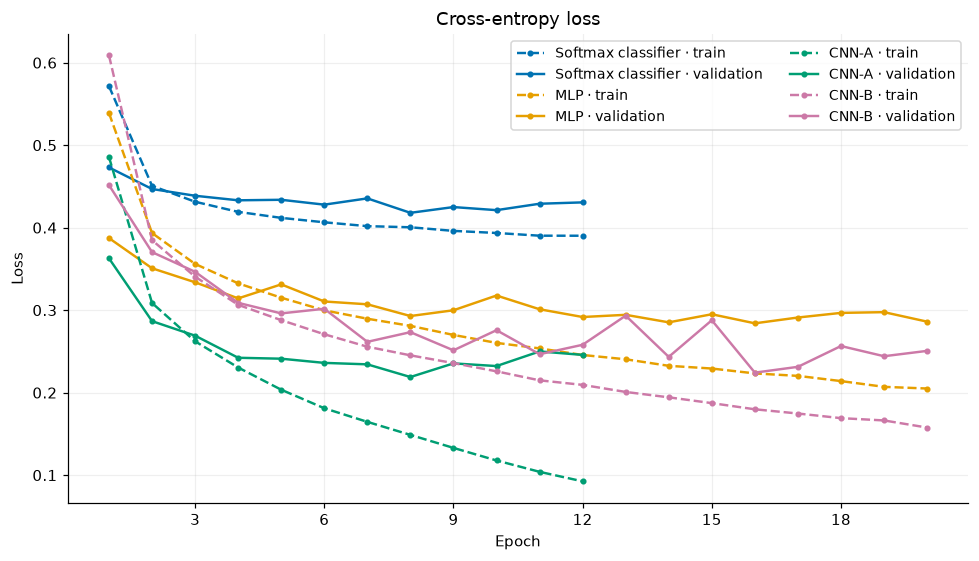
| Mô hình | Epoch / best | Train + val (s) | s/epoch |
|---|---|---|---|
| Softmax | 12 / 8 | 16.35 | 1.363 |
| MLP | 20 / 16 | 44.87 | 2.244 |
| CNN-A | 12 / 8 | 38.76 | 3.230 |
| CNN-B | 20 / 16 | 78.04 | 3.902 |
Thời gian gồm train/validation, không gồm test và vẽ hình. CNN-A có khoảng 95.2% tham số ở phần fully connected. Một seed chưa đủ kết luận chênh lệch nhỏ giữa hai CNN có ý nghĩa thống kê.
Đối chiếu MSA tự viết với nn.MultiheadAttention, đồng thời khảo sát tokenization và số heads.
Embedding D=64, 2 pre-norm encoder blocks, FFN 64 → 128 → 64, mean pooling và FC 10 lớp. Sáu phép so sánh chính: 2 loại MSA × 3 tokenizers, H=4; hai ablation bổ sung dùng H=2/8.
AdamW LR 0.001, weight decay 0.0001; batch 128, tối đa 100 epoch, patience 4, min_delta 0.0001 theo validation loss. Hai implementation được so parity forward/gradient trên CUDA float64 với dropout tắt; không đồng nghĩa hai quá trình huấn luyện trùng hoàn toàn.
| MSA / tokenizer | Val acc. | Test acc. | Tham số | s/epoch | Test F1 |
|---|---|---|---|---|---|
| Manual · Rows · H4 | 89.97% | 89.51% | 71,370 | 9.497 | 0.8941 |
| Manual · Patch · H4 | 88.60% | 88.35% | 71,946 | 10.577 | 0.8837 |
| Manual · CNN-stem · H4 | 90.65% | 90.50% | 74,426 | 10.128 | 0.9048 |
| PyTorch · Rows · H4 | 89.90% | 89.22% | 71,370 | 9.332 | 0.8913 |
| PyTorch · Patch · H4 | 88.35% | 88.47% | 71,946 | 10.554 | 0.8849 |
| PyTorch · CNN-stem · H4 | 90.47% | 90.17% | 74,426 | 8.641 | 0.9021 |
| Manual · CNN-stem · H2 | 90.33% | 90.21% | 74,426 | 9.711 | 0.9023 |
| Manual · CNN-stem · H8 | 90.35% | 90.23% | 74,426 | 9.793 | 0.9020 |
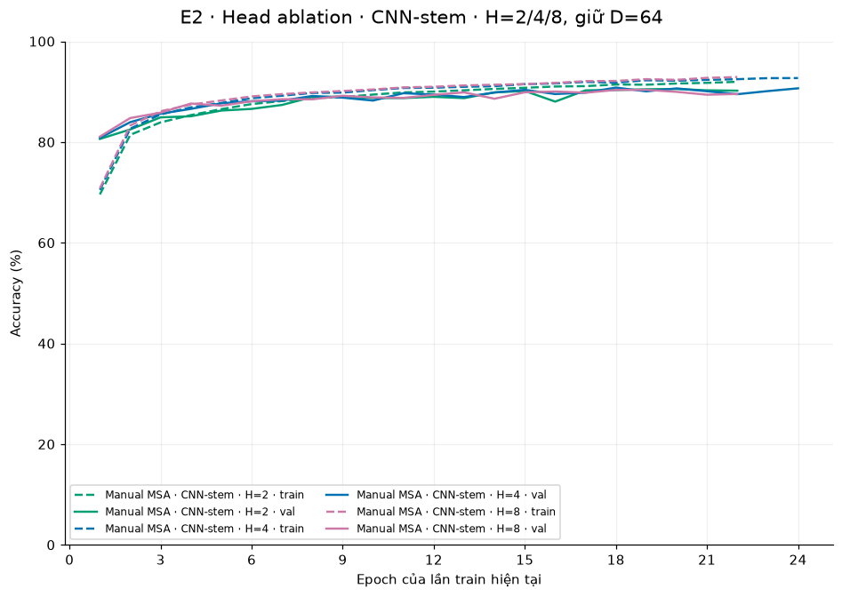
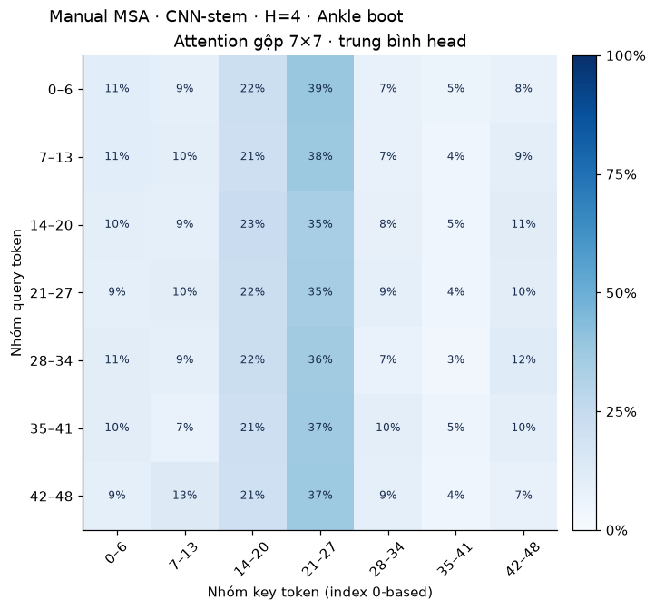
| Tokenizer · H=4 | Manual val | PyTorch val | Δ val (điểm %) | Manual / PyTorch s/epoch |
|---|---|---|---|---|
| Rows | 89.97% | 89.90% | +0.07 | 9.497 / 9.332 |
| Patch | 88.60% | 88.35% | +0.25 | 10.577 / 10.554 |
| CNN-stem | 90.65% | 90.47% | +0.18 | 10.128 / 8.641 |
PyTorch giảm thời gian/epoch 1.7%, 0.2% và 14.7% so với Manual ở Rows, Patch và CNN-stem. Tokenization được so trong từng implementation: CNN-stem có validation cao nhất. Rows dùng 28 token; Patch/stem dùng 49, làm ma trận attention mỗi head tăng từ 784 lên 2,401 phần tử. CNN-stem thêm 2,480 tham số so với Patch.
H là số attention head; D=64 nên mỗi head có D/H chiều: 32, 16 hoặc 8. Giữ D cố định không làm tăng số tham số khi đổi H. Parity forward/gradient đạt sai số forward tối đa 1.665 × 10−16 trong phép thử float64, dropout tắt.
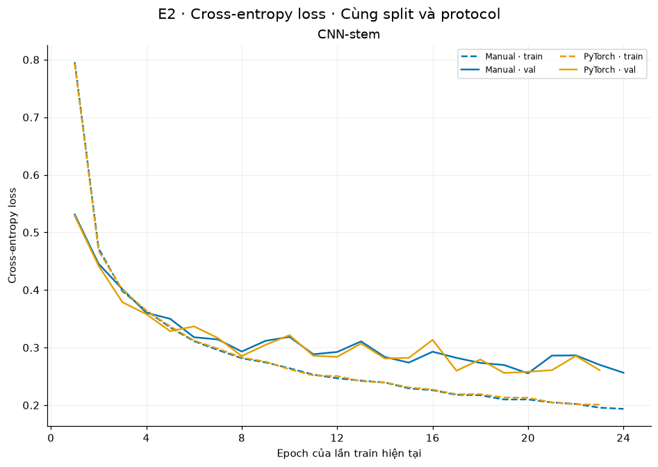
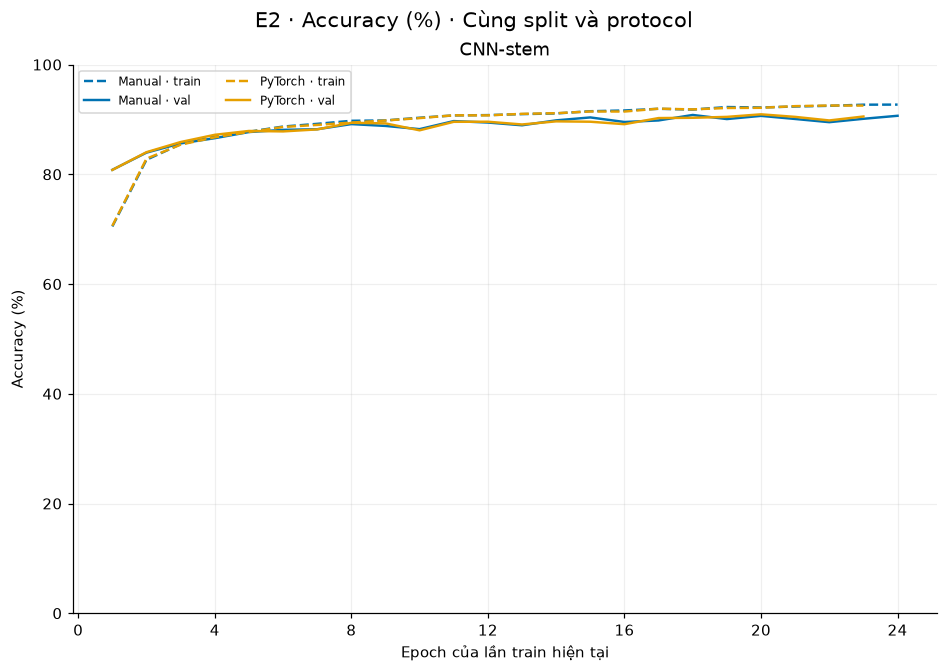
CNN-stem có validation tốt nhất ở cả bản Manual và PyTorch tại H=4, nhưng thêm 2,480 tham số so với patch thuần và thay đổi inductive bias. Chênh lệch Manual/PyTorch ở cùng tokenizer là 0.07–0.25 điểm phần trăm validation. Trên các cấu hình H=2/4/8 đã thử, H=4 cao nhất; kết quả mới đo một seed.
Nhầm lẫn vẫn tập trung giữa Shirt và T-shirt/top. Chi tiết confusion matrices của 8 cấu hình có trong notebook và phụ lục PDF.
Chuyển ảnh thành chuỗi để khảo sát vai trò của recurrence so với MLP/CNN.
Manual LSTM/GRU cell, hidden size 128; lấy hidden state cuối → FC 10. Đối chiếu phép toán và gradient với PyTorch Cell. Hai baseline MLP/CNN-B được train độc lập cùng split.
AdamW LR 0.001, weight decay 0.0001; batch 128, tối đa 100 epoch; clip norm 1 cho recurrent; early stopping validation loss, patience 4, min_delta 0.0001.
| Mô hình | Val acc. | Test acc. | Tham số | Test F1 |
|---|---|---|---|---|
| LSTM · Rows | 89.95% | 89.70% | 82,186 | 0.8965 |
| LSTM · Columns | 88.72% | 88.81% | 82,186 | 0.8885 |
| LSTM · Patch | 87.63% | 87.55% | 76,042 | 0.8761 |
| GRU · Rows | 90.47% | 90.06% | 61,962 | 0.9001 |
| GRU · Columns | 89.83% | 89.51% | 61,962 | 0.8951 |
| GRU · Patch | 89.05% | 88.44% | 57,354 | 0.8841 |
| MLP baseline | 89.47% | 89.45% | 235,146 | 0.8948 |
| CNN-B baseline | 91.93% | 91.45% | 94,186 | 0.9144 |
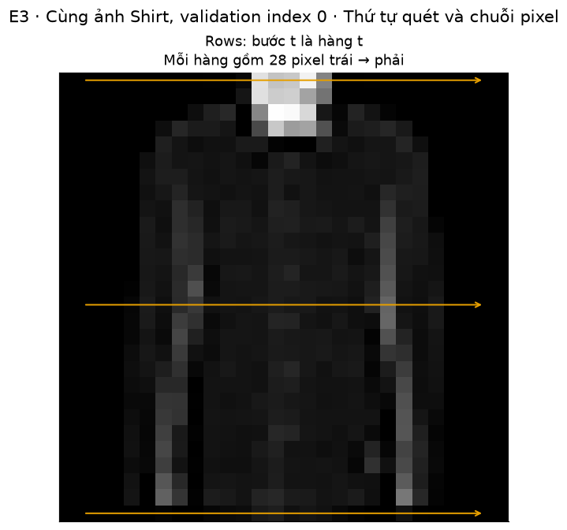
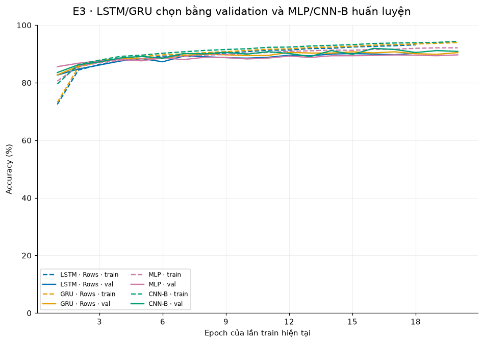
| Mô hình | Epoch / best | s/epoch |
|---|---|---|
| LSTM Rows | 18 / 14 | 26.230 |
| LSTM Columns | 23 / 19 | 27.174 |
| LSTM Patch | 20 / 16 | 46.445 |
| GRU Rows | 20 / 20 | 28.824 |
| GRU Columns | 23 / 19 | 27.933 |
| GRU Patch | 24 / 20 | 48.802 |
| MLP | 20 / 16 | 3.455 |
| CNN-B | 20 / 16 | 3.839 |
GRU Rows dùng 61,962 tham số, ít hơn LSTM Rows (82,186) nhưng chậm hơn trong implementation unroll này. Thứ tự quét ảnh là giả định biểu diễn; accuracy cao hơn chưa chứng minh mô hình học được phụ thuộc xa.
GRU cao hơn LSTM 0.36 / 0.70 / 0.89 điểm test ở Rows / Columns / Patch. Rows là biểu diễn recurrent tốt nhất trong các cấu hình đã thử; CNN-B vẫn cao hơn về accuracy và có thời gian/epoch ngắn hơn đáng kể.
Cell thủ công được unroll ở Python/PyTorch thay vì fused kernels: ít tham số hơn không đồng nghĩa train nhanh hơn. Patch thay đổi cả chiều dài chuỗi và số features, không cô lập riêng thứ tự token. Accuracy ảnh tĩnh chưa đủ chứng minh khả năng học phụ thuộc xa.
From-scratch, ImageNet pretraining, head-only, partial và full fine-tuning trên GTSRB 43 lớp.
Lý do chọn GTSRB: 43 lớp và 39,209 ảnh train nguồn, có biến thiên ánh sáng, góc nhìn và các nhóm biển báo dễ nhầm; phù hợp đánh giá CNN so với Transformer cùng các chế độ pretraining/fine-tuning. Dataset công khai phục vụ học tập, khác Fashion-MNIST của E1–E3.
Quyền sử dụng: trang benchmark gốc ghi “The data is free to use” và yêu cầu trích dẫn công trình Stallkamp et al. (IJCNN 2011); giấy phép cụ thể và quyền phân phối lại archive ERDA chưa được xác minh. Không gán giấy phép MIT/CC cho ảnh. Xem nguồn và lưu ý giấy phép ↗.
Ảnh RGB resize toàn ảnh về 224 × 224 và chuẩn hóa ImageNet. Train dùng RandomAffine ±10°, translate 5%, ColorJitter brightness/contrast 0.2 và saturation 0.1; không flip vì đổi nghĩa biển báo.
Dataset/DataLoader: đọc samples.csv và tải PNG RGB theo từng mẫu, nhãn ClassId 0–42; shuffle train theo seed, validation/test giữ thứ tự; batch 128, workers 0 trên Windows.
Huấn luyện: AdamW, scratch LR 0.0003; pretrained backbone 0.0001 / head 0.001; weight decay 0.01, warmup 3 epoch + cosine, clip norm 1. Batch 128; tối đa 40 epoch scratch / 25 pretrained; patience 2, min_delta 0.001 theo validation loss.
ResNet-50: bottleneck 3/4/6/3, GAP, head 43 lớp. DeiT-Small/16: 196 patch + CLS, embedding 384, 12 blocks, 6 heads, non-distilled.
ResNet partial mở layer4 + FC (63.79% tham số); DeiT partial mở 2 blocks cuối + norm + head (16.45%). Phép so sánh partial không có cùng ngân sách trainable.
| Kiến trúc / chế độ | Val acc. | Test acc. | Trainable | Peak MiB | Test F1 |
|---|---|---|---|---|---|
| ResNet · scratch | 98.26% | 96.33% | 23,596,139 | 5,828 | 0.9447 |
| ResNet · head-only | 66.84% | 67.33% | 88,107 | 1,567 | 0.5759 |
| ResNet · partial | 97.02% | 95.21% | 15,052,843 | 1,682 | 0.9261 |
| ResNet · full pretrained | 99.32% | 97.83% | 23,596,139 | 5,827 | 0.9678 |
| DeiT · scratch | 91.76% | 88.64% | 21,682,219 | 6,631 | 0.8267 |
| DeiT · head-only | 70.26% | 69.41% | 16,555 | 636 | 0.6016 |
| DeiT · partial | 89.32% | 87.85% | 3,566,251 | 1,373 | 0.8063 |
| DeiT · full pretrained | 99.39% | 98.92% | 21,682,219 | 6,635 | 0.9790 |
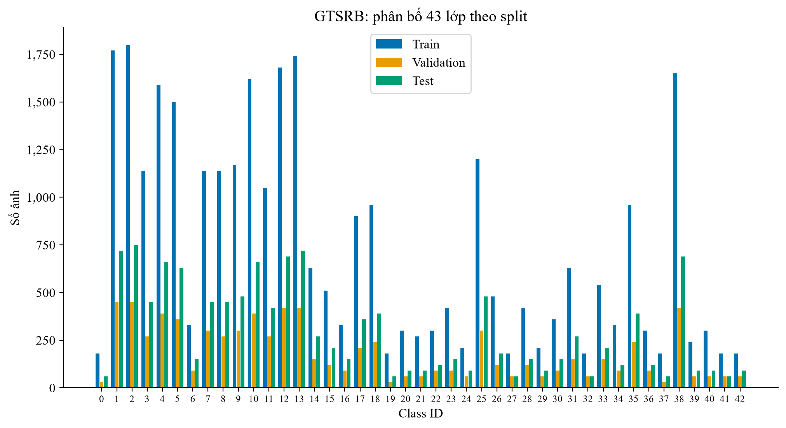
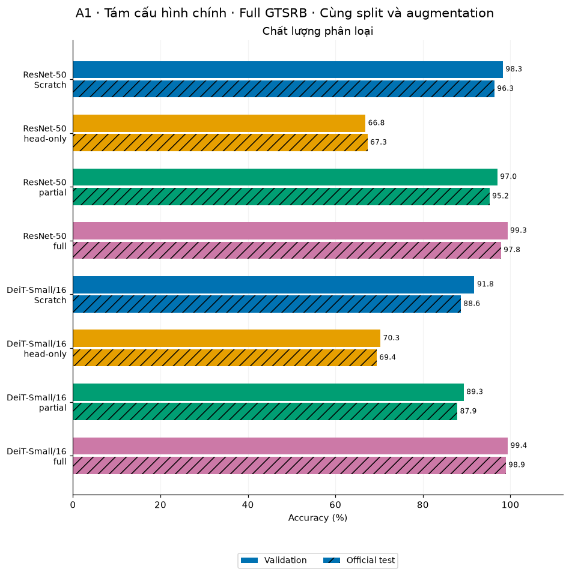
| Full pretrained | Val acc. trung bình | Test acc. trung bình |
|---|---|---|
| ResNet-50 · seeds 42/43/44 | 99.14 ± 0.29% | 97.95 ± 0.21% |
| DeiT-Small/16 · seeds 42/43/44 | 99.26 ± 0.21% | 98.50 ± 0.36% |
Ở seed 42, augmentation tăng test accuracy 0.63 điểm cho ResNet và 1.12 điểm cho DeiT so với no-augmentation; không suy rộng cho mọi split.
Full pretrained thắng về validation trong hai họ. DeiT cao hơn về test accuracy ở seed 42 và mean ba seed; ResNet có GPU-only inference throughput cao hơn trên RTX A3000 trong phép đo đã thực hiện.
GTSRB có lớp hiếm, frame cùng physical-sign track và 8 ảnh test trùng train theo SHA256. Ba seed chỉ đo cho full, và scratch/pretrained không dùng cùng learning-rate/budget; không quy mọi chênh lệch cho kiến trúc.
Điều kiện đo: RTX A3000 12 GB Laptop, batch train 128. Thời gian huấn luyện gồm train và validation; GPU throughput đo FP32, batch 32, không gồm DataLoader.
| Cấu hình | Train + val (s) | s/epoch | GPU ảnh/s |
|---|---|---|---|
| ResNet scratch | 1,615.87 | 230.838 | 416.5 |
| ResNet head-only | 1,535.00 | 153.500 | 427.8 |
| ResNet partial | 1,151.19 | 164.455 | 425.5 |
| ResNet full pretrained | 890.24 | 222.561 | 427.9 |
| DeiT scratch | 2,641.83 | 240.167 | 229.3 |
| DeiT head-only | 2,040.17 | 170.014 | 228.7 |
| DeiT partial | 1,097.07 | 182.845 | 228.7 |
| DeiT full pretrained | 1,894.50 | 236.812 | 227.8 |
Thời gian tổng phụ thuộc số epoch thực chạy và early stopping; không xếp hạng chi phí chỉ theo thời gian một epoch hoặc số tham số.
ResNet full nhầm 30/60 mẫu Pedestrians thành Road work; DeiT full nhầm 30/60 Speed limit 20 thành Speed limit 120. Accuracy toàn tập không phản ánh đầy đủ hiệu quả của các lớp hiếm. Kết quả trên test 12,622 ảnh loại trùng SHA256 là 97.83% / 98.91% cho hai mô hình full.
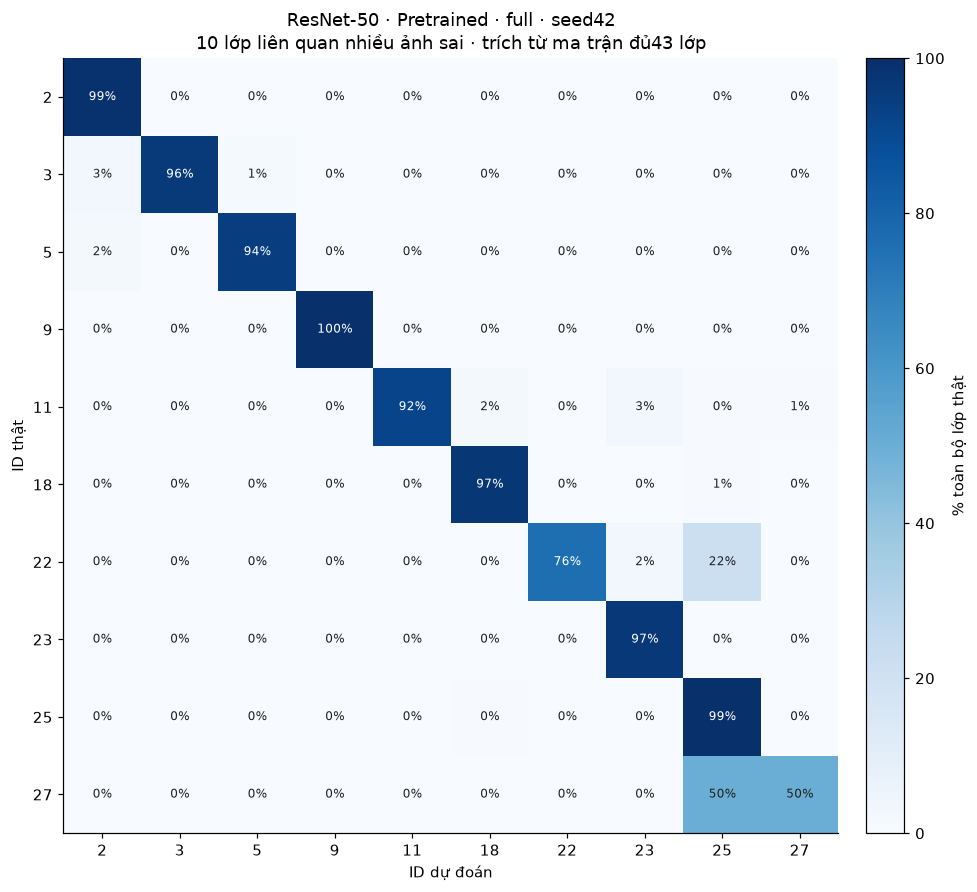
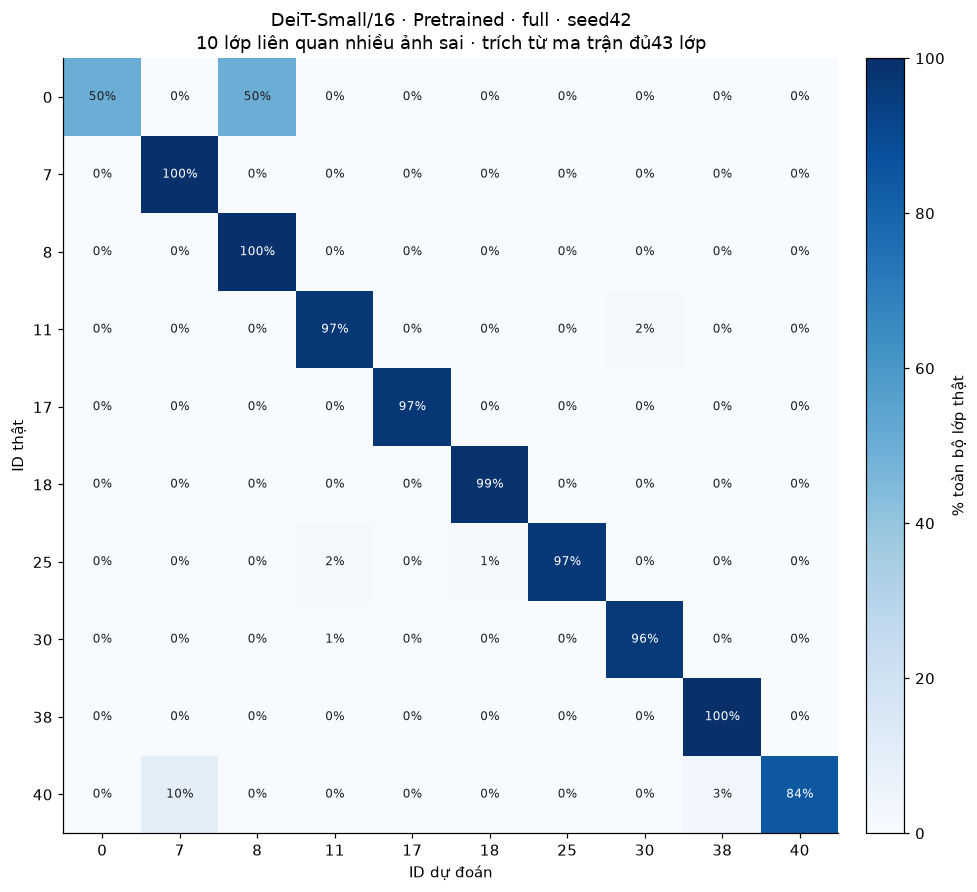
One-stage vs two-stage trên cùng VOC2012 holdout; cùng ResNet-50 ImageNet + FPN nhưng khác anchors, neck levels, head và loss.
11,540 ảnh VOC2012 trainval có nhãn → split 9,232 / 1,154 / 1,154. Dataset đọc CSV split tham chiếu JPEG/XML và tải ảnh theo yêu cầu; DataLoader workers 0, shuffle train, giữ thứ tự validation/test. Parse XML, giữ difficult và truncated; chuyển VOC 1-based inclusive sang 0-based half-open.
RGB [0,1], resize giữ tỷ lệ cạnh ngắn 600 / dài tối đa 1,000, ImageNet normalization, pad batch theo bội số 32; train horizontal flip p=0.5 và biến đổi bbox đồng bộ. Eval bỏ qua difficult theo VOC.
SGD LR 0.01, momentum 0.9, weight decay 0.0001; warmup 1 epoch + cosine, clip norm 10; tối đa 30 epoch; patience 2, min_delta 0.001 theo validation VOC mAP50.
Kaggle Tesla T4 x2: RetinaNet GPU 0, Faster R-CNN GPU 1 train song song; batch train/eval 8, accumulation 3, effective batch 24. Best epochs 19/15; chạy 21/17 epoch.
| Thành phần | RetinaNet · one-stage | Faster R-CNN · two-stage |
|---|---|---|
| FPN | P3–P7; P6 từ C5, P7 từ ReLU(P6) | P2–P6; P6 max-pool(P5) |
| Anchors | 3 scales × 3 ratios = 9/vị trí | 3 ratios = 3/vị trí |
| Head | 2 subnet riêng; mỗi subnet 4 Conv + output | RPN → RoI Pool 7 × 7 → FC 1,024 × 2 |
| Classes / bbox | 9 × 20 sigmoid / 9 × 4 offsets | 21 logits / 84 offsets mỗi RoI |
| Loss | Focal Loss + Smooth L1 | RPN objectness/bbox + RoI CE/bbox |
| Post-process | Class-wise Hard-NMS 0.5 | RPN NMS 0.7; Hard-NMS 0.5 |
Phạm vi: Backbone nạp pretrained ImageNet-1K; các head/neck học từ đầu trên VOC. Không nạp checkpoint detector đã train trên COCO.
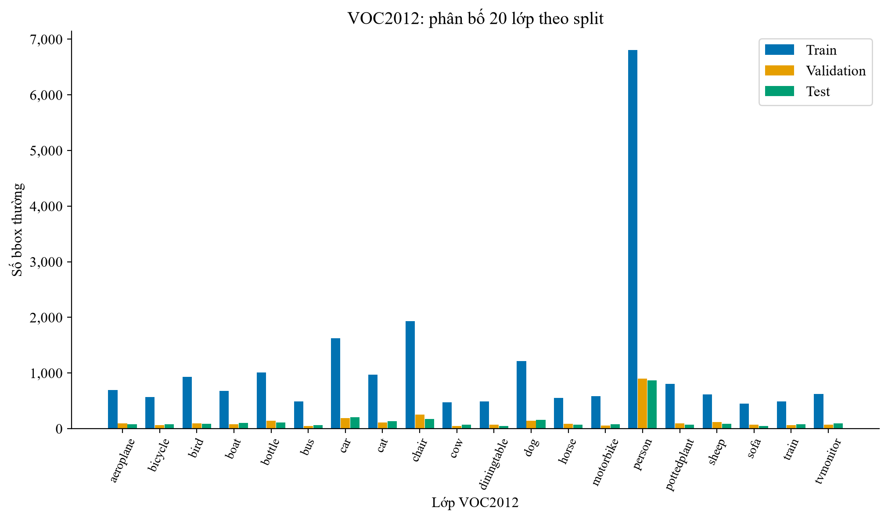
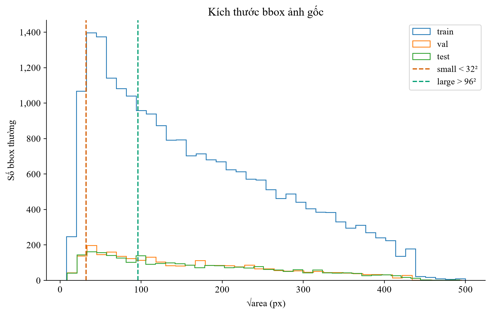
Tsung-Yi Lin, Piotr Dollár, Ross Girshick, Kaiming He, Bharath Hariharan và Serge Belongie. CVPR 2017. — Feature Pyramid Networks for Object Detection. Lateral 1 × 1, top-down nearest upsample, cộng feature và smoothing 3 × 3, cùng 256 channels ở mỗi mức.
Paper báo RPN AR@1k 48.3 → 56.3 trên COCO khi dùng FPN; bỏ top-down/lateral giảm còn 49.5/46.1. Pipeline đã triển khai các kết nối và pyramid nhưng chưa ablate riêng FPN trên VOC.
Tsung-Yi Lin, Priya Goyal, Ross Girshick, Kaiming He và Piotr Dollár. ICCV 2017. — Focal Loss for Dense Object Detection. Focal Loss giảm trọng số easy negatives với α=0.25, γ=2, phù hợp dense anchors của RetinaNet.
Paper báo alpha-balanced CE 31.1 AP → Focal Loss 34.0 AP trên COCO minival. Đây là số của tác giả trên COCO, không phải số benchmark VOC của nhóm.
ResNet-50 → lateral 1 × 1, top-down nearest-neighbor, smoothing 3 × 3; FPN theo từng detector. RetinaNet có dense classification head dùng Focal Loss (α=0.25, γ=2).
Dùng VOC2012 holdout thay COCO; resize cạnh ngắn 600, giới hạn cạnh dài 1,000; SGD warmup/cosine, effective batch 24, dừng sớm bằng validation mAP50. Faster R-CNN huấn luyện RPN/RoI joint.
Chưa chạy benchmark trên COCO hay ablation cô lập FPN/Focal Loss. Hai detector khác cả anchor, FPN levels, matching, sampling và head; không quy chênh lệch AP riêng cho số giai đoạn.
Tham khảo Chương 6.3–6.6 của báo cáo để xem thiết kế, số liệu tác giả và giới hạn tái hiện.
1,154 ảnh, 2,687 regular GT boxes. Chọn checkpoint trên validation, không theo test.
| Chỉ số | RetinaNet | Faster R-CNN |
|---|---|---|
| VOC mAP50 · all-point | 70.88% | 73.16% |
| COCO-style AP50:95 trên VOC | 39.13% | 40.98% |
| COCO-style AP50 trên VOC | 70.77% | 73.08% |
| COCO-style AP75 | 37.67% | 41.89% |
| Precision · score 0.30 | 0.5037 | 0.3873 |
| Recall · score 0.30 | 0.7838 | 0.8366 |
| Micro-F1 · score 0.30 | 0.6133 | 0.5295 |
| Params | 36,670,872 | 41,396,536 |
| Peak allocated MiB | 12,818.5 | 12,939.5 |
| Median batch-1 latency | 39.87 ms | 44.09 ms |
| Batch-1 FPS | 25.08 | 22.68 |
Faster R-CNN cao hơn về AP và recall; RetinaNet cao hơn về precision/micro-F1 tại score 0.30 và median FPS. AP tổng hợp đường precision–recall, F1 đo tại một ngưỡng; không phải kết quả mâu thuẫn.
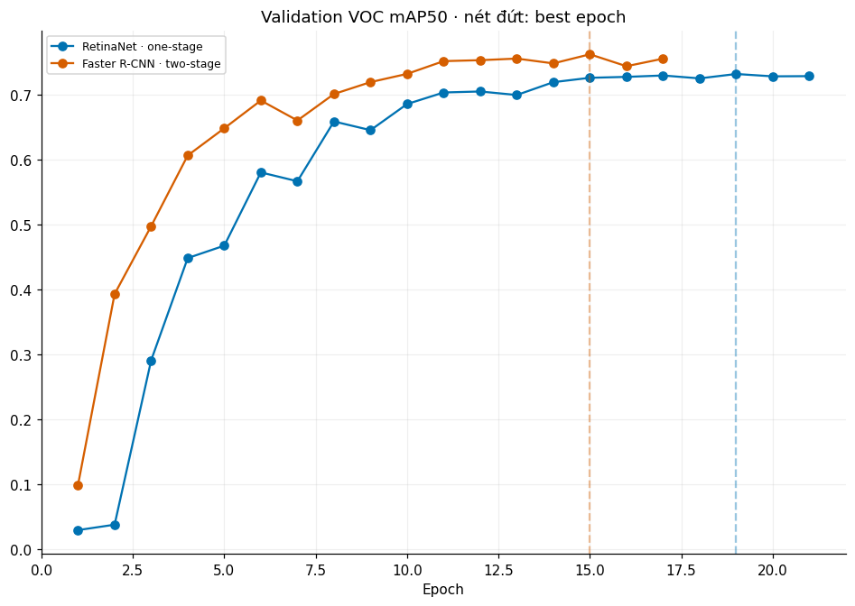
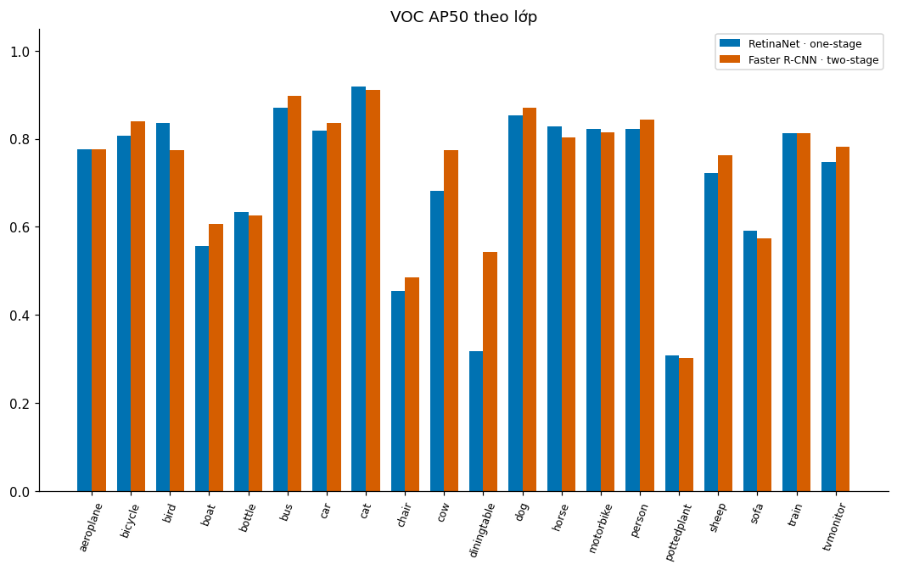
| Chỉ số · IoU 0.50:0.95 | RetinaNet | Faster R-CNN |
|---|---|---|
| AP small | 0.1296 | 0.1392 |
| AP medium | 0.2684 | 0.3057 |
| AP large | 0.4473 | 0.4606 |
| AR@1 | 0.3730 | 0.3862 |
| AR@10 | 0.5210 | 0.5386 |
| AR@100 | 0.5345 | 0.5437 |
| AR small | 0.2860 | 0.2038 |
| AR medium | 0.4238 | 0.4616 |
| AR large | 0.5814 | 0.5866 |
VOC mAP50 lấy trung bình AP all-point qua 20 lớp với IoU > 0.5. COCO-style dùng 101 mốc recall, 10 ngưỡng IoU từ 0.50 đến 0.95 và tối đa 100 detections/ảnh; vì cách tích phân khác, VOC mAP50 và COCO-style AP50 không trùng nhau. Nhóm small/medium/large theo diện tích bbox ảnh gốc, ngưỡng 32²/96² pixel.
Precision/recall/F1 và ma trận là chẩn đoán tại score 0.30, IoU 0.5; không dùng thay AP. Dự đoán khớp difficult được bỏ qua bằng quy tắc VOC; đây không phải annotation crowd của COCO. Post-process giữ score ≥ 0.05, NMS 0.5, tối đa 100 detections/ảnh.
Benchmark tốc độ: test/benchmark lần lượt trên cùng Tesla T4 GPU 0 sau train, có warmup và CUDA timing, dùng AMP. Latency model gồm resize/normalize, backbone, FPN, head, decode và NMS; không gồm đọc JPEG, chuyển dữ liệu CPU→GPU hay tính metric. Throughput batch 8: 17.67 / 15.19 ảnh/s; toàn pipeline test: 13.83 / 14.48 ảnh/s. Khác workload nên không so trực tiếp throughput với FPS batch 1.
Hai detector khác đồng thời FPN levels, anchors, matching, loss và head: chưa cô lập được hiệu ứng one-stage vs two-stage. Chưa chạy COCO benchmark/ablation nguyên bản và chỉ có một seed. COCO-style AP ở đây là metric tính trên VOC, không phải official COCO score.
Các giới hạn khác: vật nhỏ, che khuất, lượng tử hóa RoI Pool, Hard-NMS, score threshold và annotation thiếu/khó. Đánh giá difficult theo VOC không tương đương annotation crowd của COCO.
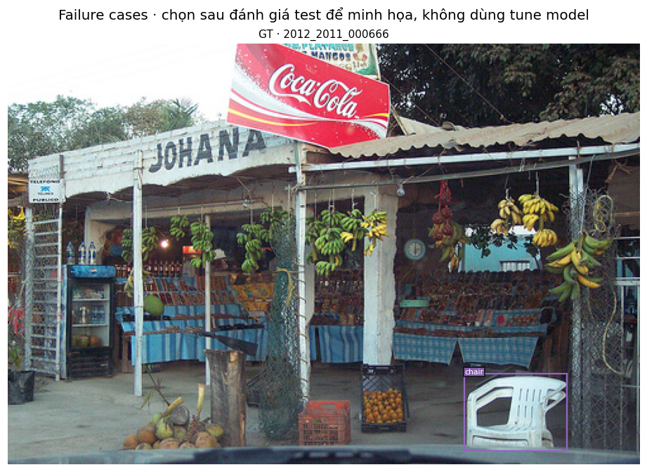
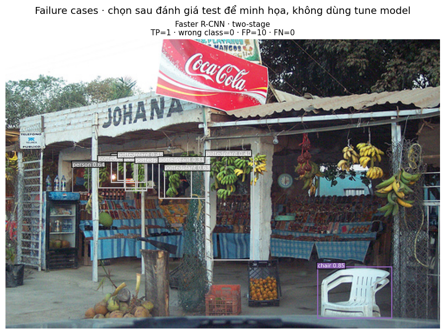
Chưa có liên kết video được công bố trong repository. Đây vẫn là mục cần bổ sung theo đề A2; trang không giả định video đã được thực hiện.
Năm notebook độc lập; không cần chạy bài này để mở bài khác. Output đã lưu cho phép xem kết quả mà không huấn luyện lại.
Thư viện: torch, torchvision, numpy, Pillow, matplotlib và IPython. Cài thư viện còn thiếu bằng đúng interpreter; phiên bản và cấu hình đầy đủ ở README.
dangtai1720/a2-voc2012 theo README./kaggle/working/report/A2 và checkpoint/history/config từ /kaggle/working/model/A2.Cần thêm pycocotools. Metadata phiên chạy ghi Python 3.13.15; output không ghi phiên bản thư viện A2. Ghi lại môi trường khi tái lập.
Mỗi cấu hình lưu một model/<bài>/<thí nghiệm>/latest.pt, chỉ thay khi validation tốt hơn. Có file thì nạp trọng số để train tiếp; không có thì khởi tạo theo cấu hình. Optimizer, scheduler, epoch và early-stopping counter bắt đầu cho lượt hiện tại: đây là nạp best weights, không phải full-state resume.
Để tái lập từ khởi tạo, đặt CHECKPOINT_ROOT tới thư mục trống trước Run All. Dùng cùng prepared split, seed và điều kiện đo; thay GPU/thư viện có thể đổi kết quả. Dữ liệu, weights và token kết nối không nằm trong Git.
Đề bài, dữ liệu, nguồn LaTeX và các paper dùng trong thực nghiệm.
Thiết lập thực nghiệm, sơ đồ mạng TikZ, kết quả và thảo luận cho cả năm bài. Notebook và các hình trong báo cáo được công bố cùng mã nguồn.
Fashion-MNIST, GTSRB và PASCAL VOC2012. README mô tả số lượng, phân bố lớp, định dạng nhãn, cách chia tập và nguồn tải. Dataset được giữ local, không đưa lên Git.
Các yêu cầu về code, so sánh mô hình, đầu ra thực nghiệm và báo cáo.
Lin et al., Feature Pyramid Networks for Object Detection (CVPR 2017) và Focal Loss for Dense Object Detection (ICCV 2017). Phân tích phương pháp, ablation gốc và phạm vi tái hiện trong mục A2.
A2 còn yêu cầu video demo riêng theo đề. Liên kết video sẽ được công bố khi có video.
Tra cứu nội dung theo ba đề PDF. Bảng ghi vị trí bằng chứng và các mục chưa đủ thông tin; không thay cho việc kiểm tra sản phẩm nộp.
| Yêu cầu | Nội dung / trạng thái | Tra cứu |
|---|---|---|
| Trang nhóm · E/A §1, §7 | Tên nhóm, 2 thành viên, giảng viên; liên kết đủ E1–E3/A1/A2, repo và PDF. | Thông tin nhóm · 5 notebook · PDF/đề |
| E1 · §2.2 | Softmax/MLP/CNN, loop tự viết, validation/test, accuracy/capacity/loss/accuracy và lỗi. | 4 mô hình + phân tích · PDF Ch.2 |
| E2 · §3.2 | Manual/PyTorch MSA, 3 tokenizer, hai phép so sánh, accuracy và chi phí. | Bảng đối chiếu · PDF Ch.3 |
| E3 · §4.2 | LSTM/GRU, 3 biểu diễn chuỗi, baseline MLP/CNN, accuracy/params và thảo luận. | 8 cấu hình · PDF Ch.4 |
| A1 · dataset / pipeline / landing page | GTSRB, CNN/Transformer, scratch/pretrained, 3 mức freeze, accuracy/F1/chi phí/lỗi. | 14 lượt train · PDF Ch.5 |
| A1 · license dataset | Trang benchmark gốc cho phép sử dụng và đề nghị trích dẫn; giấy phép cụ thể/quyền phân phối lại archive chưa xác minh. | Nguồn và giới hạn license |
| A2 · §4.1–4.2, §7.1.2 | Detection, ≥2 phương pháp, EDA/loader/augment, paper và đối chiếu; mAP50, thêm AP/AR/FPS. | Hai detector + paper · PDF Ch.6 |
| A2 · video demo, §7.1.2 | Chưa có liên kết video demo. Video trình bày là mục bổ sung nếu có. | Trạng thái sản phẩm |
| Chung · tái lập / AI / hạn nộp | Cách chạy, phạm vi best weights, điều kiện đo, khai báo hỗ trợ AI và mốc GMT+7. | Cách chạy · AI · Lịch nộp |
Hạn 23:59 GMT+7 theo đề; commit/tag dùng để xác định phiên bản nộp.
AI hỗ trợ format code và Markdown, triển khai PyTorch theo phương pháp và cấu hình được chỉ định, kiểm tra pipeline, tổng hợp bảng và biểu đồ từ output, dựng sơ đồ TikZ và dàn trang báo cáo theo mẫu. AI cũng hỗ trợ soạn hướng dẫn chạy và chuẩn bị dữ liệu. Nhóm thực hiện chịu trách nhiệm kiểm chứng, giải thích mã nguồn và kết quả. Chi tiết công việc và trách nhiệm tác giả được ghi trong README và báo cáo. Mục 1.6 đề E1–E3 yêu cầu khai báo AI hỗ trợ, không nộp sản phẩm do AI tạo phần lớn, và hiểu/bảo vệ được code, số liệu; khai báo này không thay thế yêu cầu đó.